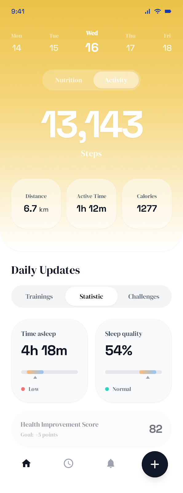
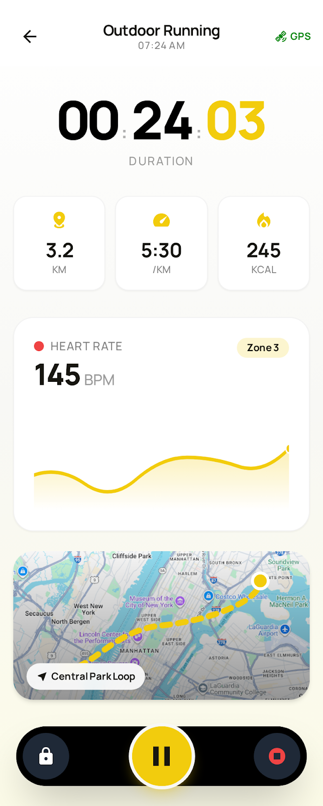
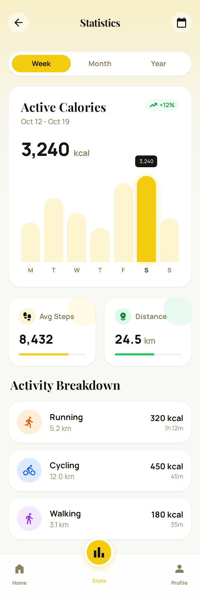

PulseTrack
Wellness & Fitness Tracking Platform — San Francisco, California
Designed the mobile interface for PulseTrack, a wellness and fitness tracking platform based in San Francisco. Created the activity dashboard, real-time training session views, and detailed statistics screens. The app features heart rate monitoring, workout tracking, and personalized fitness analytics to help users achieve their health goals.


